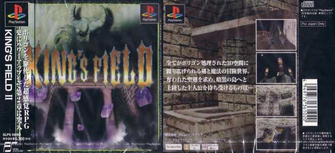

KING'S FIELD Ⅱ
1995年7月21日発売。前作から僅か半年で製作、発売されたシリーズ第二作目で、シリーズ最高傑作とも名高い。
更に綿密に描かれたダンジョンはより広く、より複雑になり、それに応じてダッシュ等が導入され、セーブポイント等にある「道標の台座」に「鍵」をはめ込んでブックマークしておくと、その鍵に対応した「ゲート」を使う事で即座にそのセーブポイントに飛べるようになった。
前述通りダンジョンは前回よりも広大になっているが、マップの繋ぎ目に当たる部分に長い通路を置く事で、其処を通っている間に次のマップを読み込むと言う手法を取る事により、ロード画面を映す事無くほぼシームレスに広大なダンジョンを歩き回れるようになった。
この手法は次回作の3でも用いられている。
また、「高さ」の概念が加わった事で高低差が生まれ、より立体的に描写されたダンジョンでは、時に高所から飛び降りて道を開かなければならない必要も生まれた。
飛び降りる際は高さに応じた落下ダメージを食らう事になり、低いHPでは落下ダメージに耐えられないが、レベルが上がってHPが増えれば耐えられる箇所と言うのが何箇所か存在する。時には一方通行な場所もあり、落下・通過してアイテムなどを取った後に、ゲート等で戻る手段を確立させておかないと、爆発判定のある魔法で自爆するなどしてデスルーラせざるを得なくなる。
しかも、竜の泉を蘇らせ、尚且つ竜王草の実を持っていなければ死んだ所でまたレベル1でスタート地点に放り出されるだけであり、尚且つ自爆出来るような魔法は大体中盤～終盤にならなければ覚えられない。
序盤でそのような事態に陥ってしまい、挙句自分を殺してくれるような敵すら居ない場合は、デスルーラも出来ずに完全な詰みにハマってしまうことになり、そうなった場合に取れる手段はリセットに手を伸ばすことのみである。
『ニコニコ動画 ニコニコ大百科より』より引用。
URL: http://dic.nicovideo.jp/a/キングスフィールド